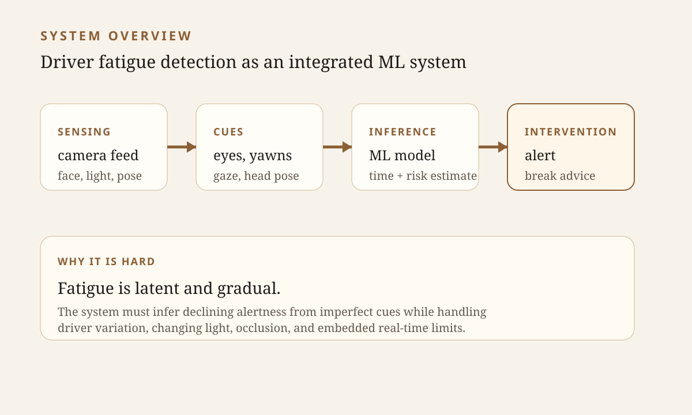
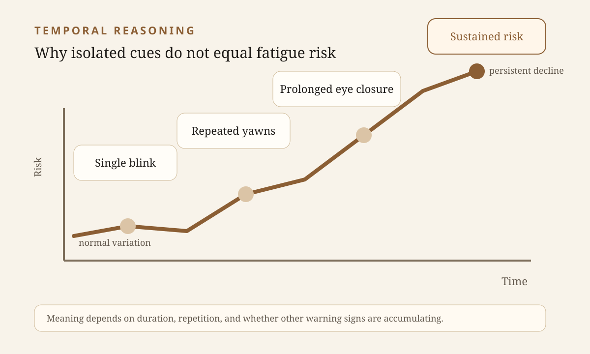
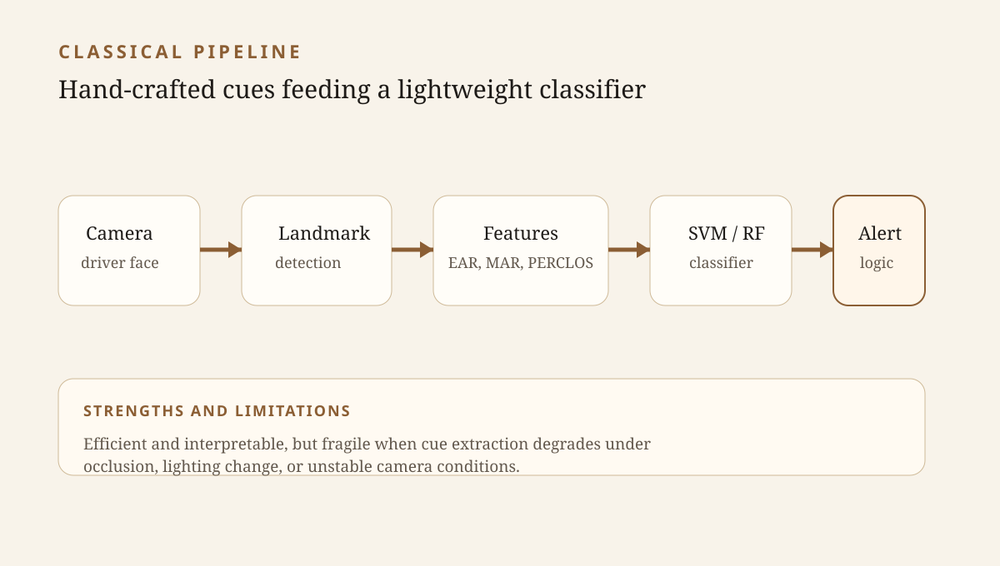
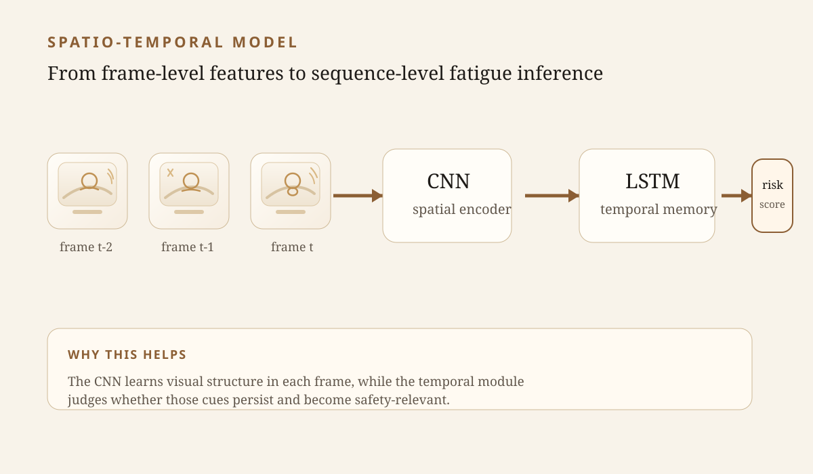
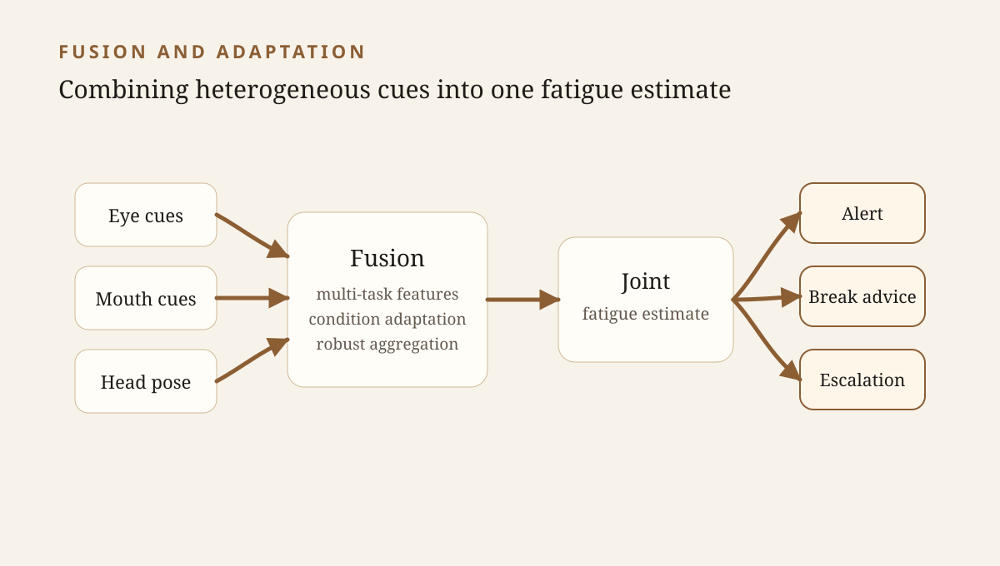
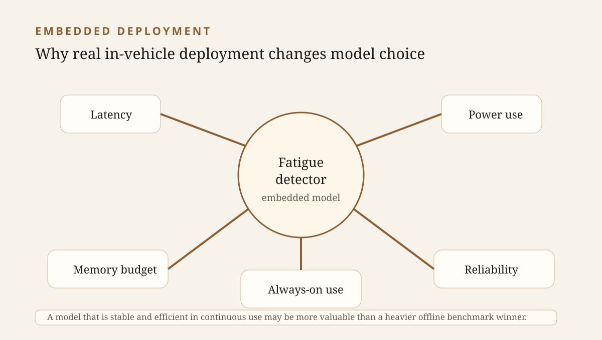
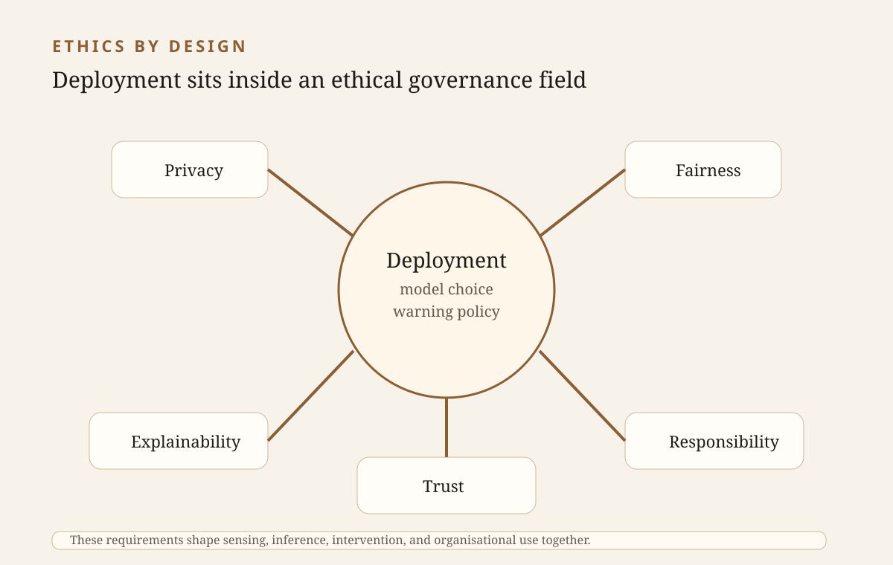
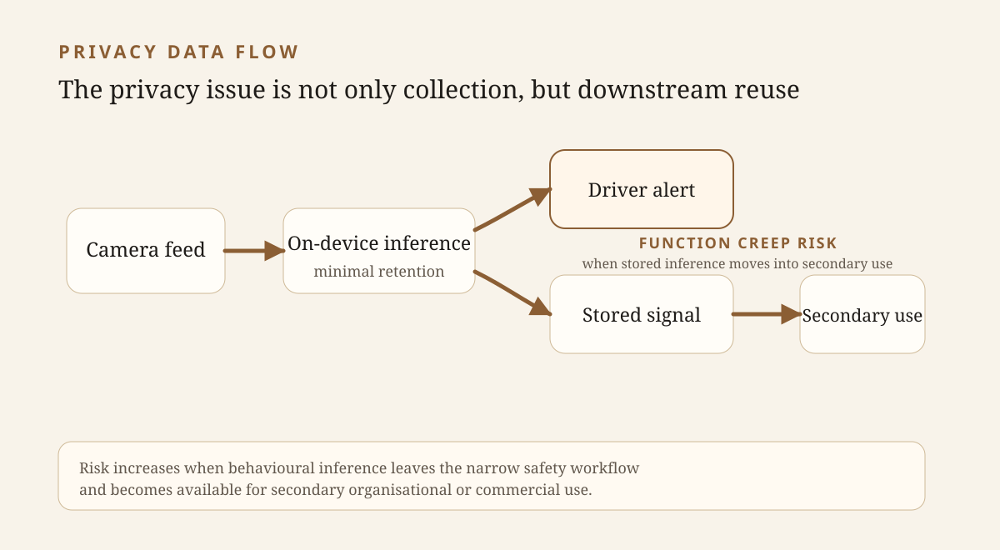
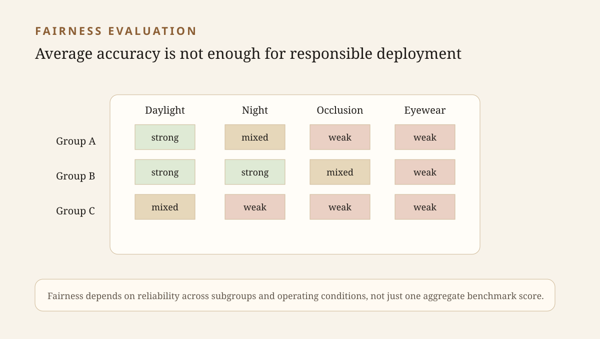
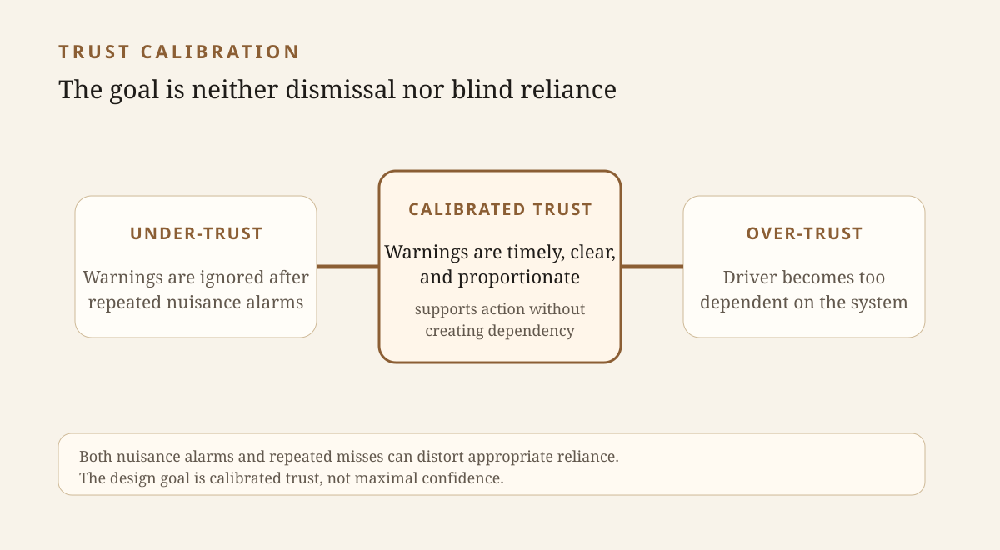

Opening
Road safety is one of those areas where seemingly small failures in attention can have very large consequences. Among the many risk factors that affect driving, fatigue remains particularly difficult to manage because it develops gradually, manifests unevenly across individuals, and may not be recognised until performance has already deteriorated. A driver does not suddenly switch from fully alert to obviously dangerous. Instead, vigilance, reaction time, gaze stability, and decision-making may decline over time, often in ways that are subtle at first and only partially visible.
This is one reason why driver fatigue detection has attracted growing attention as an application of computer vision and machine learning. The idea is appealing: if a vehicle can monitor visible behavioural signs of declining alertness early enough, it may be able to warn the driver, recommend a break, or support a broader safety system before a critical event occurs. In practical terms, this means using in-cabin visual sensing to detect patterns such as prolonged eye closure, altered blink behaviour, yawning, unstable gaze, or changes in head pose, and then using these signals to estimate whether the driver may be entering a risky state.
At first glance, this may seem like a straightforward classification task. A camera watches the driver, a model analyses the input, and the system decides whether the driver is awake or drowsy. However, this framing is too simple. Driver fatigue detection is not just a matter of recognising a face or assigning a label to an image. It is better understood as an integrated machine learning systems problem in which sensing, feature representation, temporal reasoning, embedded deployment, and human-centred intervention must all work together. What makes the task difficult is not only the visual complexity of the driver's face or behaviour, but also the fact that fatigue itself is a latent state. It cannot be directly observed. It must be inferred from imperfect behavioural evidence, often under harsh real-world constraints.
Fatigue detection is not simply about classifying faces. It is about inferring a hidden, gradual, safety-relevant state from imperfect behavioural evidence.
This blog examines that problem in three parts. First, it explains why driver fatigue detection is such a challenging application domain, even before model selection is considered. Second, it describes the main ML strategies used in this field and shows why they must be defined concretely rather than discussed only in vague terms. Third, it argues that ethical issues, especially privacy, fairness, explainability, trust, and responsibility, are not optional additions to a technical system, but central components of responsible implementation. The broader argument is simple: the value of ML-based fatigue detection depends not only on whether it can identify fatigue-related cues, but on whether it can be deployed in ways that are technically robust, ethically responsible, and appropriate for real vehicle environments.
Key Insight
Driver fatigue detection is best treated as an integrated systems problem: the challenge lies not only in visual recognition, but in temporal reasoning, embedded deployment, and ethically acceptable intervention.

Part I
Why driver fatigue detection is such a difficult application domain
One of the most important starting points is that fatigue is not directly visible in the way a traffic sign or a lane marking might be. A camera can capture facial appearance, eye state, gaze direction, head movement, or mouth opening. It cannot directly capture fatigue as a discrete object. This means the task is always inferential. The system must reason from behavioural correlates to a hidden condition of declining alertness.
That distinction matters because no single visible cue is sufficient in all cases. A blink may be normal. A yawn may simply reflect boredom or a temporary physiological response rather than a serious safety risk. A downward head movement might suggest drowsiness, but it might also reflect momentary distraction or an unrelated action. If a system treats any one of these cues in isolation as decisive, it will often be wrong. Fatigue detection therefore involves interpreting uncertain evidence rather than identifying a stable and self-evident visual signature.
The problem becomes even more difficult when one considers that fatigue unfolds over time. Many of the most meaningful indicators are not defined by a single frame, but by persistence, trend, or repetition. One closed-eye frame is not necessarily dangerous. A prolonged closure over multiple frames may be. One yawn is not the same as repeated yawning alongside unstable gaze and reduced facial responsiveness. A system that only inspects images one by one may therefore miss precisely the temporal structure that makes fatigue meaningful.
This is why driver fatigue detection is often better thought of as a risk estimation problem than a simple binary classification problem. In practice, the system is not just asking, Is the driver drowsy right now?
It is asking something closer to, Given a sequence of observed cues under current conditions, how likely is it that the driver's alertness has declined to a level that matters for safety?
That kind of judgement is inherently noisy and context-sensitive.
The application domain also introduces practical difficulties that are easy to underestimate when discussing the task abstractly. Real vehicles are not controlled laboratories. Lighting can change dramatically across day and night conditions, tunnels, glare, shadows, and weather. Drivers may wear glasses or sunglasses. Faces may be partially occluded by hand movements, head turns, or camera angle. Different drivers blink differently, yawn differently, and express fatigue differently. What looks like a strong indicator for one person may be much weaker for another. A model trained on a narrow subset of drivers or operating conditions may therefore appear strong in benchmarking but perform poorly in real use.
Data quality introduces another complication. In many vision tasks, labels are tied to directly visible objects or events. In fatigue detection, labels are often only proxies for a latent state. Datasets may be based on staged behaviour, manually assigned fatigue categories, or behavioural indicators that are themselves imperfect. This does not make the datasets useless; they are essential for progress. But it does mean that the system is being trained on labels that may not correspond perfectly to the real psychological or physiological state it is supposed to infer. This weakens the apparent certainty of model performance and complicates evaluation.
Then there is the issue of deployment. A fatigue detector in a real vehicle often has to run continuously, locally, and in real time. It cannot assume unlimited memory, unlimited computation, or stable cloud connectivity. It may need to process video streams on embedded hardware while remaining responsive enough for time-sensitive warnings. Latency, efficiency, power consumption, and robustness therefore become core parts of the problem definition. A model that performs well offline but is too heavy or too unstable for in-vehicle use is not, in practical terms, a good solution.
All of this explains why machine learning is attractive in this domain. The problem is too visually variable, too temporally structured, and too context-sensitive to be addressed adequately by simplistic rules alone. ML methods can learn richer representations from complex visual data, integrate multiple behavioural signals, and adapt more flexibly than fixed threshold systems. Yet saying machine learning helps
is still far too vague. To understand what is actually being done in this field, the ML strategies themselves need to be described concretely.
Core Challenge
Fatigue detection is difficult because it targets a hidden, time-evolving state that must be inferred from imperfect visual cues under messy real driving conditions.

Part II
From vague AI claims to concrete ML strategies
One of the key points raised in the feedback on the earlier summary was that the ML strategies used in this domain must be defined concretely. That requirement is entirely justified. In discussions of AI applications, it is easy to slip into language that sounds sophisticated but says very little. Terms such as AI-based fatigue detection
or intelligent driver monitoring
may sound convincing, but they do not explain how the system works, what assumptions it makes, or what kinds of failures it is vulnerable to.
In driver fatigue detection, different ML strategies correspond to different answers to several core questions. What information should the system focus on? Should it rely on explicit facial cues or learn directly from raw images? Should it treat each frame independently, or should it model temporal progression? Should it depend on one dominant signal, such as eye closure, or fuse multiple cues together? Should it prioritise raw predictive performance, or should it prioritise efficiency and deployability on embedded hardware?
Seen this way, ML strategy
is not a fashionable label. It refers to a specific modelling choice about representation, temporal reasoning, cue integration, and system constraints. In this domain, the main strategy families can be grouped into five broad categories: cue engineering with classical machine learning, end-to-end spatial representation learning with CNNs, spatio-temporal models for sequential inference, multi-cue fusion and condition adaptation, and deployment-aware or lightweight optimisation.
These strategies also map onto the practical difficulties discussed earlier. Cue-based systems support interpretability and lightweight inference. CNN-based systems improve representation learning under complex appearance variation. Temporal models address the sequential nature of fatigue. Fusion methods handle heterogeneous behavioural symptoms. Deployment-aware strategies respond to real-time embedded constraints. The point is not that one of these families is universally superior. Rather, each strategy reflects a different way of framing the problem, and each comes with its own strengths and limitations.
Framing Point
In this field, a modelling strategy is a concrete answer to practical questions about representation, time, fusion, and deployment, not a vague reference to AI capability.
Strategy 1: Cue engineering with classical machine learning
A traditional but still important strategy is to begin with explicit fatigue-related cues and then apply a lightweight classifier. In these systems, facial landmarks are first detected, after which hand-crafted variables are computed. Common examples include the eye aspect ratio, mouth aspect ratio, blink rate, PERCLOS, or head-pose descriptors. These features are then passed to a conventional model such as a support vector machine, random forest, or shallow neural network.
This approach remains meaningful for several reasons. First, it is computationally efficient. Since the model works on a small number of engineered features rather than high-dimensional image tensors, it can often be implemented with relatively modest hardware. That makes it attractive for embedded deployment, especially in systems where continuous operation is important.
Second, this strategy is comparatively interpretable. If the system issues an alert, it may be possible to explain that decision in terms of prolonged eye closure, increased blink duration, repeated yawning, or head instability. In a safety-critical setting, that kind of transparency has real value. Engineers can inspect which cues are driving the output, and users may find the system's reasoning easier to understand.
Third, cue engineering aligns well with long-standing domain knowledge. Humans already describe drowsiness in terms of eyes, mouth, gaze, and head posture. A cue-based pipeline formalises those intuitions into measurable variables and then lets the classifier learn how they relate to fatigue-related states.
But this strategy also has real weaknesses. It depends heavily on upstream landmark detection and facial analysis. If the eye region is partially occluded, if the head turns significantly, or if lighting conditions degrade landmark stability, the system may produce poor features before the classifier even begins its work. In such cases, the classifier is not failing because it is unintelligent; it is failing because the input representation has already deteriorated.
There is also a broader limitation: hand-crafted features may not capture all the subtle visual information relevant to fatigue. They reflect what designers think matters, not necessarily everything that the data might reveal. This is one reason why the field increasingly moved toward learned representations.
Trade-off
Cue-engineered systems are attractive when efficiency and interpretability matter, but their reliability can collapse when landmark quality or viewing conditions deteriorate.

Strategy 2: End-to-end spatial representation learning with CNNs
A second major strategy is to replace hand-crafted feature extraction with convolutional neural networks. Rather than relying on manually designed geometric ratios, these models learn discriminative visual features directly from image regions such as the face, the eyes, or multiple cropped areas of interest.
This change matters because fatigue-related appearance is often more nuanced than a few scalar measurements can express. The difference between a normal blink and a fatigue-related eyelid pattern may involve textures, shapes, and local spatial context that are hard to reduce to a single ratio. A CNN can learn filters that respond to these differences directly from the data. It can capture richer visual structure and potentially become more robust to small variations that would undermine simpler handcrafted pipelines.
CNN-based approaches are therefore especially useful when the problem is framed as one of spatial representation learning. The system learns which visual features are informative instead of receiving them in manually designed form. This often improves flexibility and performance in settings where appearance variation is substantial.
However, a purely spatial CNN still has a limitation that is particularly important in fatigue detection: it typically treats each frame largely in isolation. It can be very good at recognising whether the eyes appear open or closed in one frame, or whether the mouth appears open in another, but fatigue itself is not usually a one-frame event. What matters is often how these signals develop and persist across time. This means that even strong spatial CNNs may not be enough on their own.
In that sense, CNN-based spatial learning is a major improvement over rigid cue engineering, but it is not the full solution. It solves part of the problem, representation of complex visual appearance, while leaving open the question of temporal reasoning.
Spatial Learning Payoff
CNNs improve the visual representation problem, but they still need temporal context if the system is going to distinguish isolated events from genuine fatigue progression.
Strategy 3: Spatio-temporal models for sequential fatigue inference
Because fatigue is expressed over time, one of the most important strategy families in this domain is explicit temporal modelling. The core idea is that the system should not only examine what is visible in the current frame, but also learn how those cues evolve across consecutive frames.
One way to do this is through 3D CNNs, which extend convolution into the temporal dimension. Instead of treating each frame independently, a 3D CNN processes a short sequence of frames together and learns motion-sensitive spatio-temporal patterns. This makes it possible to encode changes over time directly within the feature extraction process.
Another common approach is to separate spatial encoding from temporal aggregation. In this design, a CNN first extracts frame-level visual features, and a recurrent model such as an LSTM then aggregates those features over time. This allows the model to maintain a hidden representation of recent context and distinguish transient actions from sustained risk patterns.
This strategy is especially important because many operationally relevant fatigue cues are defined by duration. A single closed-eye frame is not necessarily dangerous; a prolonged closure over multiple frames may be. A single yawn may be harmless; repeated yawning over a longer interval may be meaningful. Gaze instability, eye closure, and head behaviour often need to be interpreted not as isolated events but as evolving patterns.
Spatio-temporal models are therefore more faithful to the structure of the task than purely spatial classifiers. They better capture the fact that fatigue is gradual, uncertain, and sequential. In practical terms, they also help reduce the brittleness that can arise when a system reacts too strongly to a single momentary event.
At the same time, temporal modelling introduces its own challenges. Sequence models are often heavier than frame-level models, more complex to train, and sensitive to choices about time windows, hidden-state design, or temporal pooling. In embedded settings, those costs matter. So while spatio-temporal methods are conceptually well matched to fatigue detection, they must still be integrated carefully within broader system constraints.
Why Time Matters
Temporal reasoning helps distinguish transient behaviour from sustained safety risk, which is crucial when fatigue signals emerge gradually rather than as single-frame events.

Strategy 4: Multi-cue fusion, auxiliary tasks, and condition adaptation
Another key family of strategies arises from the fact that fatigue is heterogeneous. Not every driver expresses it in the same way. Some drivers primarily show signs through the eyes, others through yawning, head movement, or more diffuse behavioural changes. A robust system therefore should not rely too heavily on a single signal source.
This motivates multi-cue fusion. Instead of making the final decision from one channel alone, the system combines multiple cue-specific representations. Eye behaviour, mouth behaviour, head pose, and other contextual features can be integrated into a joint model. This reduces reliance on any one unstable source and makes the system more resilient when one cue becomes unreliable due to occlusion, lighting, or individual variation.
Related to fusion is multi-task learning. In this framework, the model is trained not only on the final fatigue label but also on auxiliary tasks such as eye-state recognition, yawn detection, landmark localisation, or scene-condition understanding. The intuition is that these auxiliary tasks encourage the network to learn richer intermediate structure rather than mapping pixels directly to a fatigue label in a brittle way. The representation becomes anchored in semantically meaningful subproblems.
Condition-adaptive learning addresses another practical difficulty: the fact that the effective data distribution changes across lighting, occlusion, and subject characteristics. A model that performs well in one operating condition may generalise poorly in another. By explicitly adapting the learned representation to different conditions, the system can become less brittle in deployment.
These strategies are important because they move the field beyond the idea that a single best cue or a single best model will solve the problem. In reality, fatigue detection often benefits from combining complementary information, supporting intermediate structure, and explicitly addressing the variability of real use conditions.
Robustness Point
Fusion and adaptation matter because fatigue is heterogeneous: stronger systems combine multiple cues and remain usable when one signal or condition becomes unreliable.

Strategy 5: Deployment-aware and lightweight optimisation
A final major strategy concerns deployability. In-vehicle fatigue detection is not useful if the model is accurate but too slow, too heavy, or too power-hungry to run continuously on embedded hardware. This is why deployment-aware optimisation should itself be regarded as an ML strategy rather than an afterthought.
This includes methods such as model compression, knowledge distillation, efficient inference design, transfer learning into smaller architectures, and restricted processing of regions of interest rather than full-frame analysis. In practical terms, such strategies determine whether the system can run continuously in real time and whether it can be trusted to remain operational in a vehicle rather than only in an offline experimental setting.
This point matters because it shifts attention away from benchmark performance alone. In many ML domains, it is tempting to assume that the best model is simply the one with the best evaluation score. In fatigue detection, that is often too simplistic. A slightly less accurate model that runs efficiently and reliably on embedded hardware may be more valuable than a heavier model that performs better in offline testing but cannot support robust real-world use.
Deployment-aware optimisation therefore belongs alongside representation learning and temporal modelling as one of the central ML choices in the domain. The system is not complete until it can function continuously under the constraints that define its intended setting.
Taken together, these five strategy families show why the phrase ML strategy
must be taken seriously. In this domain, progress does not come from vague invocations of AI. It comes from concrete decisions about what to represent, how to reason across time, how to combine cues, how to adapt to variable conditions, and how to satisfy embedded deployment constraints.
Deployment Lesson
In-vehicle ML is not complete at benchmark accuracy; it is complete only when the model can run continuously, responsively, and reliably within embedded constraints.

Part III
Why ethics cannot be an afterthought
The technical side of the problem is important, but it is not sufficient. In fact, one of the most important conclusions of the report is that ethical issues are not peripheral to driver fatigue detection. They are central to implementation.
A fatigue detector is also a behavioural judgement system embedded in an intimate space. That is why performance, privacy, fairness, and accountability cannot be separated.
A fatigue detector is not simply a passive perception system. It continuously observes a driver in a confined and often intimate space, infers a latent behavioural state from bodily signals, and may trigger warnings or other actions in response. In other words, it is also a form of behavioural surveillance embedded in a safety-critical environment. The ethical question is therefore not whether ethics should be added after technical development is finished. The ethical question is how the system should be designed from the start so that its operation is acceptable, justifiable, and accountable.
This matters because predictive performance alone is ethically insufficient. A model may score highly on benchmark datasets and still be problematic in practice if it is overly intrusive, systematically less reliable for some drivers, too opaque to understand, or likely to generate mistrust and harmful side effects. A strong technical result is not the same thing as a responsibly deployable system.
To make this clearer, it helps to think of fatigue detection as involving several values at once: safety benefit, privacy intrusion, disparity across users, opacity of intervention logic, and the calibration of trust. These dimensions cannot be collapsed into a single performance score. A system that improves one dimension while seriously harming another may not be ethically acceptable overall. This is why privacy, fairness, explainability, trust, and responsibility must be treated as design requirements rather than after-the-fact constraints.
Ethical Premise
Here, ethics is not a late-stage compliance layer; it is part of defining what a usable and responsible fatigue detection system actually is.

Privacy, in-cabin surveillance, and function creep
The most immediate ethical issue is privacy. Vision-based fatigue detection depends on continuous in-cabin sensing, often focused on the face, the eyes, gaze patterns, and head movement. Even if the goal is narrowly defined as safety, the practical consequence is that the interior of the vehicle becomes a monitored space in which intimate behavioural signals are rendered machine-readable.
This raises an important distinction between data collection and behavioural inference. The privacy problem is not merely that images or video are captured. It is also that those visual inputs are interpreted as evidence about the driver's internal state. In this sense, the system is not just watching the driver. It is turning aspects of embodied behaviour into operational signals.
A second privacy concern is function creep. A system introduced as a safety feature may later be extended to insurance scoring, employer oversight in commercial fleets, law-enforcement access, emotional analysis, or more general behavioural analytics. Once the sensing and inferential pipeline exists, the step from narrow safety monitoring to broader surveillance may become technically easy, even if it is ethically profound.
This matters especially in workplace contexts. A commercial driver may not experience such monitoring as a voluntary assistance feature but as a condition of employment. In that setting, the ethical issue extends beyond informational privacy to autonomy, dignity, and power imbalance.
For these reasons, privacy in this domain should be treated as a system design issue. Privacy-preserving feature extraction, on-device inference, minimal data retention, explicit restrictions on secondary use, and carefully controlled access are all relevant. A fatigue detector should not assume maximal identifiability or unlimited repurposing by default.
Privacy Warning
The privacy risk comes not only from recording the driver, but from turning intimate in-cabin behaviour into machine-readable judgements that can later be repurposed.

Fairness, demographic bias, and unequal protection
Another major ethical challenge is fairness. The technical discussion already established that fatigue detection is vulnerable to inter-subject variability, variable lighting, occlusion, and imperfect training data. Ethically, this becomes a fairness problem when those weaknesses align systematically with differences across users.
A detector may work less reliably for drivers whose facial appearance is less well represented in the training data, whose eyewear causes more occlusion, whose skin tone interacts badly with illumination-sensitive pipelines, or whose behavioural style differs from what the model expects. In such cases, the issue is not only that the model is less accurate. It is that some users receive less dependable safety protection than others.
This is why fairness in this domain should be understood as reliability parity under realistic operating conditions. The relevant question is not simply whether the model seems fair on average, but whether different groups of drivers receive comparably reliable assistance in the conditions where the system will actually be used.
That implies subgroup-aware evaluation, diversified datasets, stress testing under varied lighting and occlusion conditions, and honest reporting of failure modes. A model that performs well in aggregate but poorly for certain users may still be ethically unacceptable if its claimed purpose is to improve safety.
In this sense, fairness is not an abstract add-on. It is part of determining whether the technology provides equal protection or reproduces uneven vulnerability.
Fairness Standard
For fatigue detection, fairness means comparable reliability across real users and real operating conditions, not simply a strong average score.

Explainability, contestability, and intervention logic
Explainability is also essential. In a safety-critical setting, a warning matters not only because it is issued, but because the driver can understand why it happened and what it implies. Fatigue detection is always inferential. The system is making a judgement about a latent state under uncertainty, not observing an indisputable fact.
For that reason, explainability should not be reduced to technical visualisations aimed only at developers. What matters ethically is whether the system's behaviour is intelligible at the level of user interaction and operational policy. A driver should be able to understand, at least in broad terms, whether an alert was triggered by prolonged eye closure, repeated yawning, unstable gaze, or a persistent combination of cues. The intervention logic itself should also be understandable: what threshold was crossed, whether persistence mattered, and what response is expected.
This connects directly to contestability. False positives and false negatives are not just technical errors; they can have moral and practical consequences. A false negative may fail to protect a fatigued driver and other road users. A false positive may create distraction, undermine trust, or trigger unfair consequences in occupational settings. Systems that issue consequential outputs should therefore allow routes for understanding, questioning, and contesting those outputs.
Without intelligibility and contestability, the technology risks becoming not just opaque, but socially unaccountable.
Design Implication
An alert should communicate more than a verdict. It should expose enough logic for the driver or operator to understand what kind of evidence led to intervention.
Trust, false alarms, and behavioural miscalibration
Trust is another central issue. A good fatigue detection system should not merely be trusted; it should be trusted appropriately. Over-trust can lead to complacency, while under-trust can lead users to ignore useful warnings. This means system errors matter not only because they reduce technical performance, but because they shape the human relationship to the technology.
False alarms are a particularly important example. A system that produces frequent nuisance warnings may quickly be dismissed or ignored, even if it is correct in other cases. Conversely, repeated misses can create misplaced confidence. Two systems with similar benchmark accuracy may therefore produce very different trust outcomes depending on how they fail, how they present alerts, and what consequences those alerts carry.
This is why intervention design is not just a UX matter. Warning timing, escalation logic, and output format are ethical variables because they affect whether the technology supports user agency or instead creates dependency, irritation, or injustice. A blunt awake/drowsy label may be convenient, but it may also be too simplistic for a problem defined by uncertainty and temporal progression. Graded risk communication may better match both the uncertainty of the inference and the autonomy of the driver.
Trust, then, is not just a psychological side effect. It is part of responsible system design.
Trust Calibration
Good driver monitoring should encourage appropriate reliance: enough confidence that warnings matter, but not so much confidence that users become complacent.

Responsibility, governance, and meaningful human control
The final major ethical issue is responsibility. Once fatigue detection is integrated into a wider vehicle or fleet system, accountability becomes distributed across many elements: data collection, model design, threshold setting, interface design, organisational policy, and human response.
The key ethical question is therefore not only who should be blamed if the system fails, but who had responsibility for anticipating foreseeable harms, controlling misuse, calibrating interventions, and designing the system in a way that remains intelligible and governable. That is a much broader and more important question than post hoc blame assignment.
This becomes especially salient when fatigue monitoring is linked to semi-automated driving or takeover support. In those settings, the system may influence warnings, readiness assumptions, or transitions of control. Monitoring outputs can therefore become entangled with broader judgments about who is responsible for safety at a given moment.
That is why the idea of meaningful human control matters here. System behaviour should remain understandable, traceable to responsible design choices, and supportive of human oversight rather than silently substituting machine judgement for accountable decision-making. A fatigue detector that is accurate but poorly governed, opaque in use, or impossible to challenge may still be ethically deficient.
Taken together, these ethical issues show that responsible implementation cannot be reduced to a performance target. Privacy, fairness, explainability, trust, and governance are part of what it means to build a fatigue detection system responsibly.
Governance Point
Responsibility in this domain is distributed: model design, thresholds, interface policy, and organisational use all shape whether the system remains accountable.
Conclusion
Final reflections
Driver fatigue detection via computer vision is a promising application of integrated machine learning systems for transport safety, but it should not be understood as a narrow image-classification problem. The challenge is not only to recognise fatigue-related visual patterns, but also to align sensing, temporal reasoning, model design, embedded deployment, and human-centred intervention under real operational constraints.
The analysis also shows why ML strategies must be described concretely. In this domain, different strategies correspond to different modelling assumptions and practical priorities. Feature-engineering pipelines remain relevant when interpretability and efficiency matter. CNN-based systems improve spatial representation learning. Recurrent and spatio-temporal models better capture the sequential nature of fatigue. Multi-cue fusion and condition adaptation improve robustness across heterogeneous symptoms and operating conditions. Deployment-aware optimisation is essential for continuous embedded use.
At the same time, technical performance is not enough. Because fatigue detection requires continuous in-cabin monitoring and produces behaviourally consequential judgements, privacy, fairness, explainability, calibrated trust, and responsibility must be treated as central components of system design. A detector that performs well on benchmark data may still be ethically poor if it is intrusive, unevenly reliable, opaque in operation, or weakly governed.
The broader takeaway is straightforward. The value of ML-based driver fatigue detection depends not only on whether it can identify fatigue-related cues, but on whether it can be deployed in ways that are technically robust, ethically responsible, and appropriate for real vehicles. That is the standard against which progress in this domain should ultimately be judged.
Closing Takeaway
The most valuable fatigue detector is not just accurate; it is technically robust, ethically governed, and realistic enough to work in actual vehicles.
References
References
- World Health Organization,
Road traffic injuries,
https://www.who.int/news-room/fact-sheets/detail/road-traffic-injuries, 2023. Accessed: 2026-03-26. - National Highway Traffic Safety Administration,
Drowsy driving: Avoid falling asleep behind the wheel,
https://www.nhtsa.gov/risky-driving/drowsy-driving, 2024. Accessed: 2026-03-26. - Muhammad Ramzan, Hikmat Ullah Khan, Shahid Mahmood Awan, Amina Ismail, Muhammad Ilyas, and Ahsan Mahmood,
A survey on state-of-the-art drowsiness detection techniques,
IEEE Access, vol. 7, pp. 61904-61919, 2019. - Yaman Albadawi, Maen Takruri, and Mohammed Awad,
A review of recent developments in driver drowsiness detection systems,
Sensors, vol. 22, no. 5, p. 2069, 2022. - Bhargava Reddy, Ye-Hoon Kim, Sojung Yun, Chanwon Seo, and Junik Jang,
Real-time driver drowsiness detection for embedded system using model compression of deep neural networks,
in Proceedings of the IEEE Conference on Computer Vision and Pattern Recognition Workshops (CVPRW), 2017, pp. 438-445. - Shuli Fu, Xin Li, et al.,
Advancements in the intelligent detection of driver fatigue and distraction based on machine vision methods,
Applied Sciences, vol. 14, no. 7, p. 3016, 2024. - Takafumi Abe, Yoko Komada, and Yasutaka Inoue,
Perclos-based technologies for detecting drowsiness: Current state and future directions,
Sleep and Biological Rhythms, vol. 21, no. 2, pp. 111-120, 2023. - Na Lin et al.,
Advancing driver fatigue detection in diverse lighting conditions through improved visual modelling,
PLOS ONE, vol. 19, no. 6, p. e0304669, 2024. - Cheng Xu et al.,
Detecting driver drowsiness using hybrid facial features and ensemble learning,
Information, vol. 16, no. 4, p. 294, 2025. - Jongmin Yu, Sangwoo Park, Sangwook Lee, and Moongu Jeon,
Representation learning, scene understanding, and feature fusion for drowsiness detection,
in Computer Vision - ACCV 2016 Workshops, Chi-Sing Chen, Jiwen Lu, and Kai-Kuang Ma, Eds., Cham: Springer International Publishing, 2017, pp. 165-177. - Jihun Yu and Seong-Whan Lee,
Drivers drowsiness detection using condition-adaptive representation learning framework,
IEEE Transactions on Intelligent Transportation Systems, vol. 22, no. 2, pp. 1150-1163, 2021. - Shabnam Abtahi, Mohammad Omidyeganeh, Shervin Shirmohammadi, and Behnood Hariri,
YawDD: A yawning detection dataset,
in Proceedings of the 5th ACM Multimedia Systems Conference, 2014, pp. 24-28. - Ricardo Florez et al.,
A real-time embedded system for driver drowsiness detection based on visual analysis of the eyes and mouth using convolutional neural network and mouth aspect ratio,
Sensors, vol. 24, no. 19, p. 6261, 2024. - Yaman Albadawi, Maen Takruri, and Mohammed Awad,
Real-time machine learning-based driver drowsiness detection using visual features,
Journal of Imaging, vol. 9, no. 5, p. 91, 2023. - Tianjun Zhu, Chuang Zhang, Tunglung Wu, Zhuang Ouyang, Houzhi Li, Xiaoxiang Na, Jianguo Liang, and Weihao Li,
Research on a real-time driver fatigue detection algorithm based on facial video sequences,
Applied Sciences, vol. 12, no. 4, p. 2224, 2022. - Sanghyuk Park, Fei Pan, Sunghun Kang, and Chang D. Yoo,
Driver drowsiness detection system based on feature representation learning using various deep networks,
in Computer Vision - ACCV 2016 Workshops, Chi-Sing Chen, Jiwen Lu, and Kai-Kuang Ma, Eds., Cham: Springer International Publishing, 2017, pp. 154-164. - Jie Lyu, Zejian Yuan, and Dapeng Chen,
Long-term multi-granularity deep framework for driver drowsiness detection,
arXiv preprint arXiv:1801.02325, 2018. - Chao-Han Weng, Yi-Hsuan Lai, and Shang-Hong Lai,
Driver drowsiness detection via a hierarchical temporal deep belief network,
in Computer Vision - ACCV 2016 Workshops, Chi-Sing Chen, Jiwen Lu, and Kai-Kuang Ma, Eds., Cham: Springer International Publishing, 2017, pp. 117-133. - Reza Ghoddoosian, Marnim Galib, and Vassilis Athitsos,
A realistic dataset and baseline temporal model for early drowsiness detection,
in Proceedings of the IEEE/CVF Conference on Computer Vision and Pattern Recognition Workshops (CVPRW), 2019. - Andrew McStay and Lachlan Urquhart,
In cars (are we really safest of all?): Interior sensing and emotional opacity,
International Review of Law, Computers & Technology, vol. 36, no. 3, pp. 470-493, 2022. - Horizon 2020 Commission Expert Group to advise on specific ethical issues raised by driverless mobility,
Ethics of connected and automated vehicles: Recommendations on road safety, privacy, fairness, explainability and responsibility,
Technical Report, Publications Office of the European Union, Luxembourg, 2020. - Ashutosh Mishra, Jaekwang Cha, and Shiho Kim,
Privacy-preserved in-cabin monitoring system for autonomous vehicles,
Computational Intelligence and Neuroscience, vol. 2022, p. 5389359, 2022. - Joy Buolamwini and Timnit Gebru,
Gender shades: Intersectional accuracy disparities in commercial gender classification,
in Proceedings of the 1st Conference on Fairness, Accountability and Transparency, vol. 81 of Proceedings of Machine Learning Research, 2018, pp. 77-91. - Suzan Ayas, Birsen Donmez, and Xing Tang,
Drowsiness mitigation through driver state monitoring systems: A scoping review,
Human Factors, vol. 66, no. 9, pp. 2218-2243, 2024. - Michael A. Nees,
Driver monitoring systems: Perceived fairness of consequences when distractions are detected,
in Adjunct Proceedings of the 13th International Conference on Automotive User Interfaces and Interactive Vehicular Applications, 2021, pp. 57-61. - Hebert Azevedo-Sa, Suresh Kumaar Jayaraman, Connor T. Esterwood, X. Jessie Yang, Robert Lionel, and Dawn M. Tilbury,
Comparing the effects of false alarms and misses on humans' trust in (semi)autonomous vehicles,
in Companion of the 2020 ACM/IEEE International Conference on Human-Robot Interaction, 2020, pp. 113-115. - Dongyeon Yu, Chanho Park, Hoseung Choi, Donggyu Kim, and Sung-Ho Hwang,
Takeover safety analysis with driver monitoring systems and driver-vehicle interfaces in highly automated vehicles,
Applied Sciences, vol. 11, no. 15, p. 6685, 2021. - Filippo Santoni de Sio, Giulio Mecacci, and Jeroen van den Hoven,
Realising meaningful human control over automated driving systems: A multidisciplinary approach,
Minds and Machines, vol. 33, no. 1, pp. 139-166, 2023.